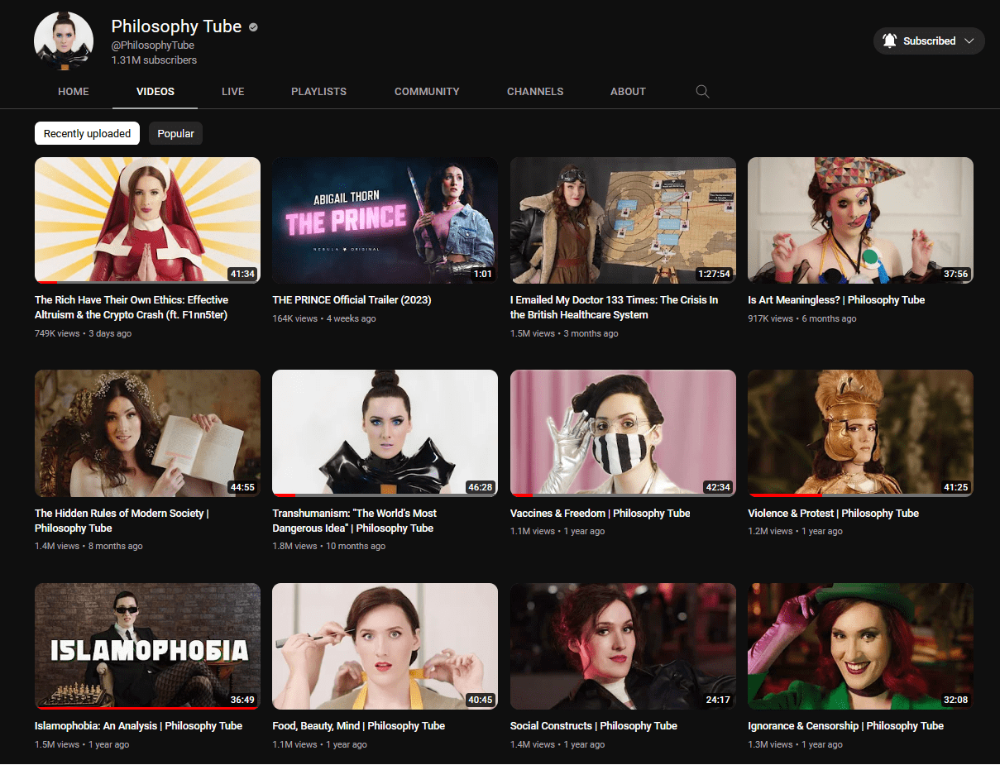

Abigail Thornbetter known online as Philosophy Tubeis an English YouTuber and Actress who makes videosdiscussing political and social issues through the lens of philosophy. 
expand_more
| Date Of Birth | April 24, 1993 |
| Nationality | British |
| Education | University of St Andrews (MA) East 15 Acting School (MA) |
Thorn is from Newcastle upon Tyne and has two older brothers. She attended the Royal Grammar School, where she was a member of an army cadets group. Thorn credits her discovery of philosophy to her teacher, as well as having taken the subject as an A-level course. She later studied Philosophy and Theology at the University of St. Andrews, where she also participated in Mermaids and the St Andrews Revue. Thorn graduated with a Scottish Master of Arts in Philosophy in 2015, coming top of her year. She then trained at East 15 Acting School, completing a Master of Arts awarded by the University of Essex in 2017 before moving to London. October 2019, Thorn discussed her sexuality in her YouTube video Queer✨, where she came out as bisexual. On 30 January 2021, Thorn came out as a trans woman. She has given speeches at protests in favour of transgender healthcare, and advocated for transgender liberation. Thorn identifies as a lesbian, as of February 2022.
Philosophy Tube
Her videos usually discuss a particular topic through a context of philosophy from a left-leaning perspective. Though her videos often have a format similar to that of a lecture or a blog, they can often take on a more stylized nature featuring dramatized cutaway scenes to illustrate her points.
St. James described the video Men. Abuse. Trauma. as "one of the best TV episodes of the year".Thorn's video Queer✨ was one of 134 video essays included in Sight and Sound as one of the "best video essays of 2019". Strucci reviewed for the magazine that the video was "illuminating and entertaining" as well as "joyful". Gwendolyn Ann Smith, writing for the Bay Area Reporter, praised Identity: A Trans Coming Out Story as "delving deeply into the very nature of being trans in ways she has not typically seen", in relation to the perspective that gender transitioning is about "revealing the truth within" rather than "becoming something that we weren't".